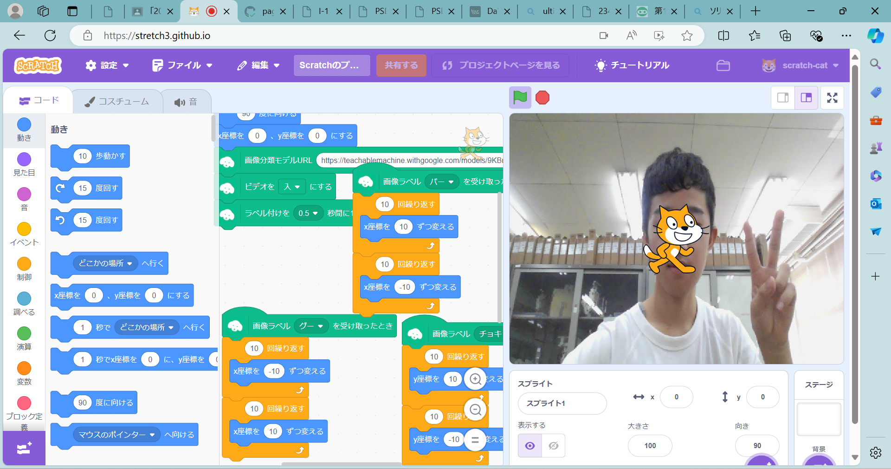

第2週目
2-1 １週目のレポートをHTMLで作る
１週目のレポート
1.内容
スクラッチで、線を描くプログラムをつくったこと、自分の紹介を書いた。
2.感想
ホームページを作ると聞いたときは難しそうだと感じたが、説明を聞きながら進めていたら、かんたんに作ることができた。
スクラッチで、線を描くプログラムをつくったこと、自分の紹介を書いた。
2.感想
ホームページを作ると聞いたときは難しそうだと感じたが、説明を聞きながら進めていたら、かんたんに作ることができた。
2-2 機械学習体験

1.内容
グー、チョキ、パー、なしの四つを覚えさせて、スクラッチでそれぞれ別の反応をするようにプログラムした。
2.感想
覚えさせるために撮る写真を増やすほど読み取りが正確になるのが見ていて面白かった。
グー、チョキ、パー、なしの四つを覚えさせて、スクラッチでそれぞれ別の反応をするようにプログラムした。
2.感想
覚えさせるために撮る写真を増やすほど読み取りが正確になるのが見ていて面白かった。
2-3 VR（バーチャルリアリティー：Virtual Reality）会議室の体験
 1.内容
1.内容仮想空間の中で、他の人とやり取りした。
2.感想
視点を変えても滑らかに動いたので、酔うこともなく楽しめた。